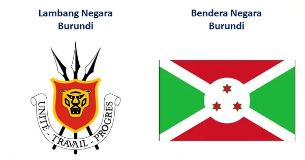

Negara Burundi sering dijuluki sebagai negara termiskin di dunia. Negara ini terletak di benua Afrika di bagian Timur dengan luas sekitar 20 ribu kilometer persegi dan menampung kurang lebih 11 juta penduduk. Burundi merupakan sebuah negara tanpa laut di daerah Danau Besar di tengah benua Afrika. Negara ini berbatasan dengan Rwanda di utara, Tanzania di selatan dan timur serta Republik Demokratik Kongo di barat. Meskipun negara ini tidak mempunyai batas laut, banyak dari perbatasan baratnya bersebelahan dengan Danau Tanganyika. Nama negara ini berasal dari bahasa Bantu, Kirundi. Negara ini sangat miskin. Dibanding Indonesia, pendapatan perkapitanya 400 kali lebih kecil daripada Indonesia.

Penduduk di daratan tinggi Burundi sebagian besar bekerja sebagai petani pisang dan pengantar pisang dari dataran tinggi ke dataran rendah atau kota. Pengantar pisang ini menggunakan sepeda dengan mengangkut kurang lebih 200kg pisang sejauh 15 km. Untuk mencari uang mereka harus siap dengan resiko yang fatal untuk mengantarkan pisang, pengendara sepeda berpegangan pada truk.
Negara Burundi miskin meskipun tanahnya subur, di dataran tinggi utara kebanyakan pisang bahkan sampai ada puluhan jenis pisang yang berbeda dan buah tersebut sudah menjadi makanan pokok penduduk di sana, petani menjualnya ke tengkulak. Minuman nasional Burundi adalah bir pisang